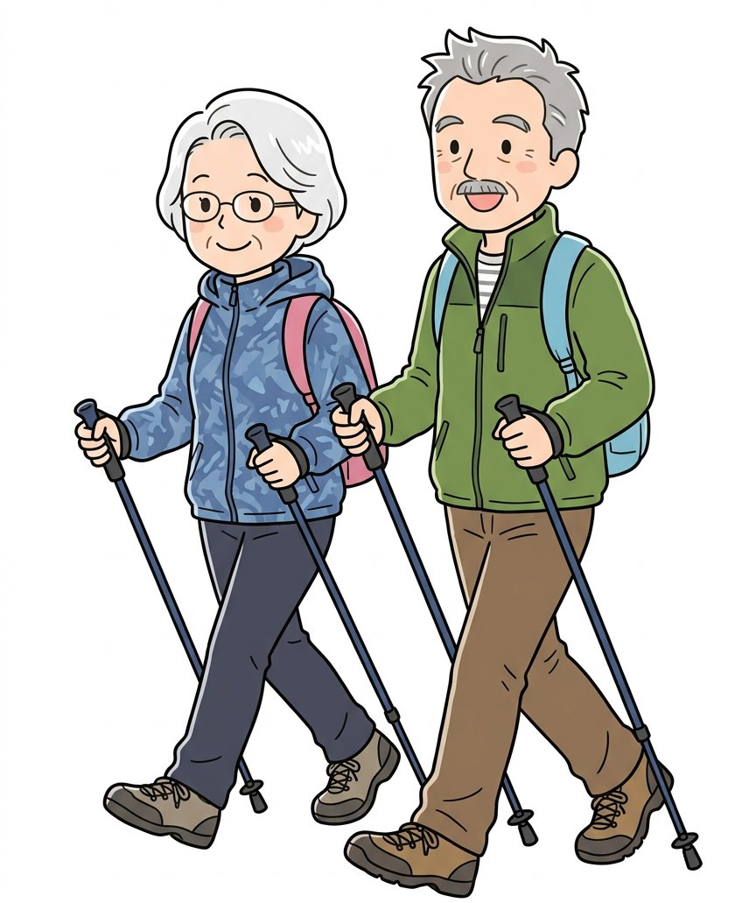
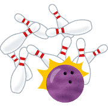
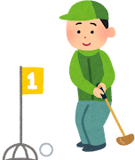

あの夜を、一緒に。
子どもの『わぁ』がまちの宝物。
自治会で出来ること
自治会とは
「自治会ってなんとなくはいっているけど実際何しているのだろう？」そう思っている方も多いかもしれません。実は、暮らしのすぐそばで自治会は動いています。
ちょうどいい距離で、つながるまち。
文化・健康部
ノルディック体操
＼100歳まで元気に！／

津田南校区元気づくりプロジェクト
📅 毎月第2・第4火曜 14:30〜
📍 春日公会堂
🏆 頑張った賞贈呈 6月
🛒 体操の日はウエルシア移動販売も！
毎週火曜日開催
welcia
ネットワークでお店とつながる移動販売
💳 クレジット・モバイル決済・電子マネー可
🏦 公共料金・各種料金のお支払い可
📅 毎週火曜日
※道路状況や販売状況により到着時間が前後する場合があります
※ご利用状況により販売時間が変更になる可能性があります
【お問い合わせ】
◎ 商品のご注文は（前日までにご連絡ください）
ウエルシア枚方中宮本町店
TEL：072-805-3545
◎ 停留場所に関すること
枚方市健康福祉部
健康づくり・介護予防課
TEL：072-841-1458
🏅 体育部の活動
🎳 ボウリング大会
年1回開催・景品あり！
⛳ グラウンドゴルフ大会
年1回開催
🌳 公園清掃
年1回実施
🎯 みんなで遊ぼう（仮称）
企画中


🎳 ボウリング大会
年1回開催・景品あり！
⛳ グラウンドゴルフ大会
年1回開催
🌳 公園清掃
年1回実施
🎯 みんなで遊ぼう（仮称）
企画中
🚔 防犯部
防犯パトロール 年4回
危険箇所・不法駐車・防犯灯の確認
公園清掃 年1回
🌿 環境部
全戸一斉溝掃除 年1回
クリーンパトロール 年1回
公園清掃 年1回
🚒 防災部の活動
⚠️ あなたの避難場所を確認してください
| 避難場所 | 対象（組番号） |
|---|---|
| 春日神社駐車場 | 元町2の1〜17組 |
| 春日東野幼稚園 第2グラウンド |
元町1の7〜9,12〜15,17〜19,25,26組 東町1・北町4・北町/四つ辻 |
| 春日元町公園 | 元町1の1〜6,10,11,16,20〜24組 西町4 |
| サンエース駐車場 | 東町1〜8組 |
※ 組番号は回覧板・自治会事務所でご確認ください
🏃 防災訓練
春日自治会自主防災避難訓練 27年1月予定
✅ 非常用持ち出し品チェックリスト
🍱 食料
👕 衣類など
🧴 日用品
💳 貴重品
🪖 安全対策・医療品
※ 最低3日分、できれば1週間分を準備しましょう
スマホからいつでも最新の回覧板を確認できます。
加入のご案内
- ✅ 回覧板がスマホで見られる
- ✅ 災害時に地域情報がいち早く届く
- ✅ ノルディック体操など地域活動に参加できる
春日自治会への加入をお待ちしております。まずはお気軽にお電話ください。
📞 072-858-2270（自治会事務所）アクセス
📍 住所：大阪府枚方市春日元町2丁目18－3
春日公会堂